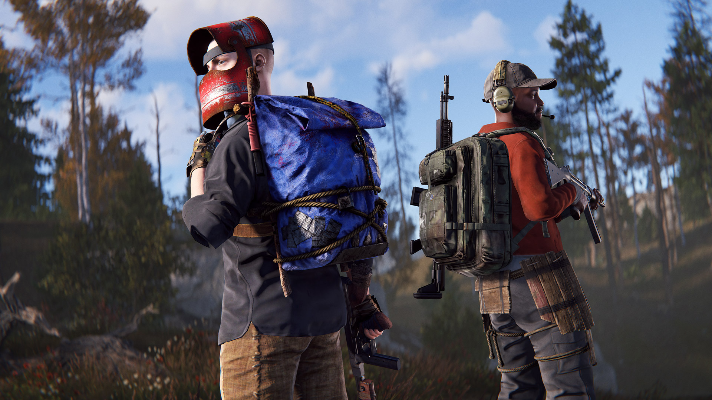
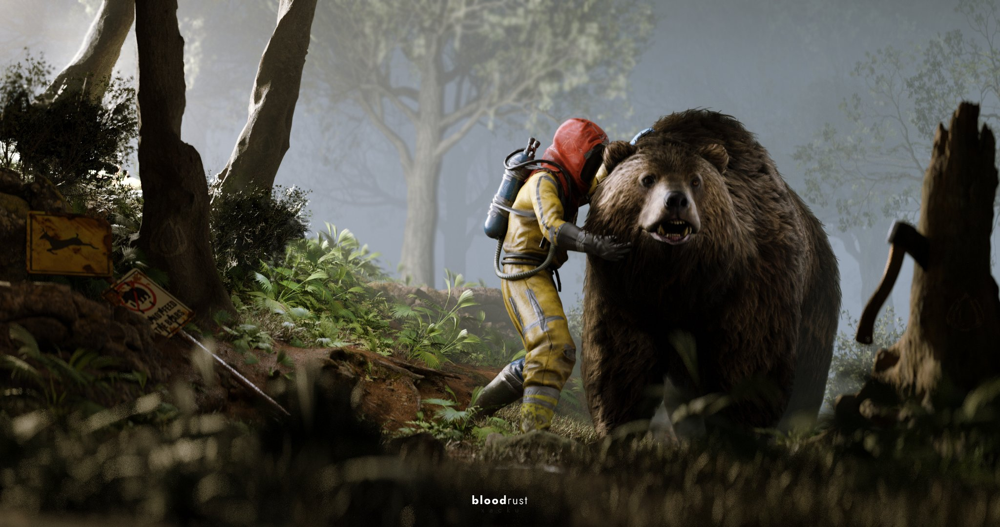
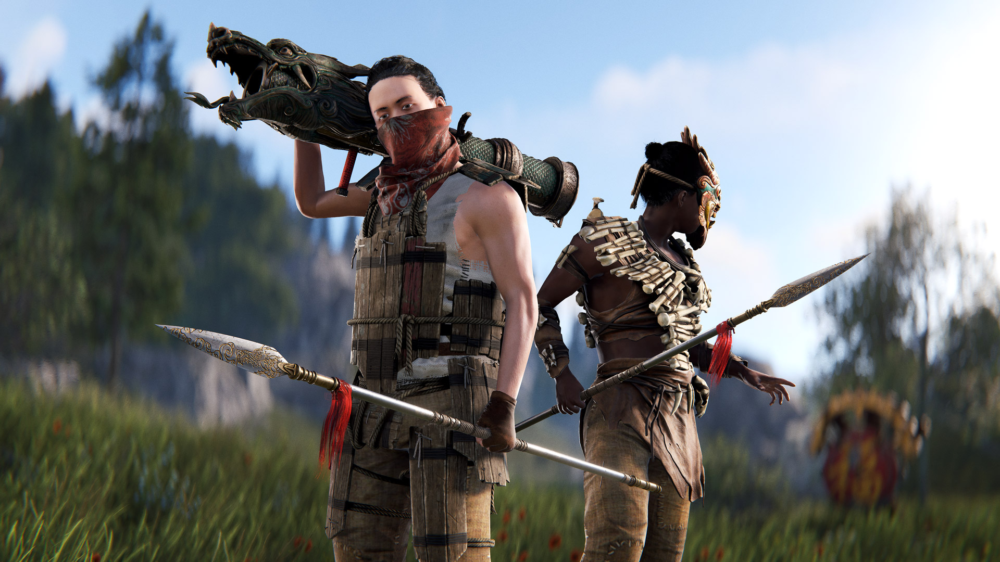
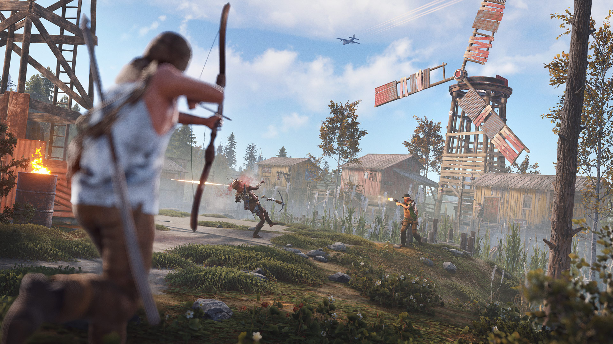
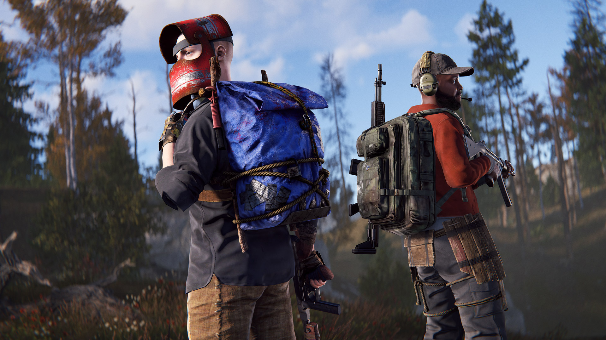
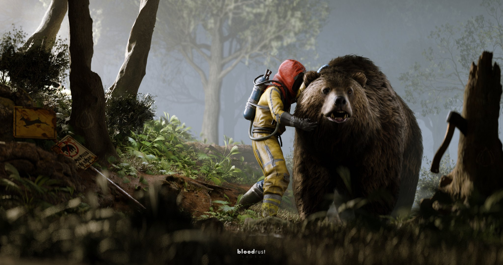
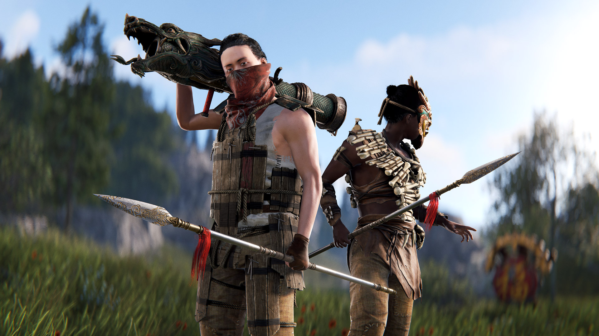
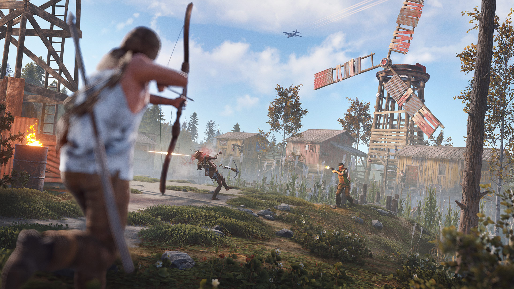

Rust, Facepunch Studios tarafından geliştirilen ve hayatta kalma türüne yeni bir soluk getiren çok oyunculu bir oyun. Sert ve acımasız bir dünyada, hayatta kalmak için gereken tüm becerileri ve stratejileri kullanmanızı gerektirir. Rust, doğal tehlikeler, açlık, susuzluk ve diğer oyuncuların tehditleri arasında hayatta kalmaya çalıştığınız, sürekli bir mücadele sunar.
Hayatta Kalma ve Tehlikeler
Rust’ın temel amacı hayatta kalmaktır. Bunun için yiyecek bulmalı, su kaynakları keşfetmeli ve barınak inşa etmelisiniz. Ancak hayatta kalmak yalnızca doğal tehlikelere karşı değil; diğer oyunculara karşı da kendinizi korumanız gerekir. Bu dünyada yalnız kalabilir veya diğer oyuncularla ittifaklar kurabilirsiniz, ancak her an ihanete uğrama ihtimaline hazırlıklı olmalısınız.
Crafting ve İnşa
Rust, geniş bir crafting sistemi sunar. Basit bir taşla başladığınız bu yolculukta, zamanla gelişmiş araçlar, silahlar ve zırhlar üretebilirsiniz. Barınak inşa etmek, hayatta kalmak için kritik bir öneme sahiptir. Küçük bir kulübeden karmaşık bir kale inşa etmeye kadar her şey sizin yaratıcılığınıza bağlıdır. Ancak unutmayın, barınağınız her zaman saldırıya açık olacaktır.
Çatışma ve Strateji
Rust, PvP odaklı bir deneyim sunar. Silahlarınızı ve taktiklerinizi doğru kullanarak diğer oyuncularla çatışmalara girebilirsiniz. Ancak doğrudan çatışmalar kadar, gizlilik ve stratejik düşünme de önemlidir. Saldırmak mı yoksa savunmak mı gerektiğini doğru zamanlamayla belirlemek hayatta kalmanızda etkili olacaktır.
Açık Dünya ve Keşif
Rust’ın devasa açık dünyası, ormanlar, dağlar, çöller ve radyasyon bölgeleri gibi çeşitli biyomlarla doludur. Bu bölgelerde kaynak toplarken veya yeni yerler keşfederken sürekli tetikte olmanız gerekir. Özellikle tehlikeli alanlarda daha değerli kaynaklar bulabilirsiniz, ancak bu yerler genellikle diğer oyuncuların da hedefindedir.
Çok Oyunculu Etkileşim
Rust’ın asıl gücü, çok oyunculu yapısında yatar. Oyuncular, ister iş birliği yaparak büyük gruplar kursun, ister yalnız kurt gibi takılsın, her zaman diğer oyuncularla etkileşim halindedir. Diplomasi, ihanet ve dostluk oyunun vazgeçilmez unsurlarıdır. Her oyuncunun kendi hikayesini yazdığı bir deneyim sunar.
Tehlikeler ve Çevresel Unsurlar
Oyunun tehlikeleri sadece diğer oyuncularla sınırlı değildir. Açlık ve susuzluk kadar soğuk hava koşulları, radyasyon ve vahşi hayvanlar da sizi tehdit eder. Doğanın bu sert koşulları, hayatta kalma mücadelesini daha da zorlaştırır ve her zaman hazırlıklı olmanızı gerektirir.
Modlar ve Topluluk
Rust, modlanabilir yapısıyla topluluğun yaratıcılığını destekler. Özel sunucular, modifiye edilmiş oyun kuralları ve kullanıcı tarafından oluşturulan içerikler sayesinde her oyuncu farklı bir Rust deneyimi yaşayabilir. Bu da oyunun sürekli taze kalmasını sağlar.
Rust, yalnızca bir hayatta kalma oyunu değil, aynı zamanda oyuncular arasında dinamik bir etkileşim ve sürekli değişen bir hikaye sunan bir deneyimdir. Hem bireysel yeteneklerinizi hem de sosyal stratejilerinizi sınar. Açık dünyasının detayları, crafting mekanikleri ve sert rekabet ortamıyla oyunculara unutulmaz bir hayatta kalma mücadelesi sunar. Hazır mısınız? Çünkü Rust dünyası sizi affetmez!